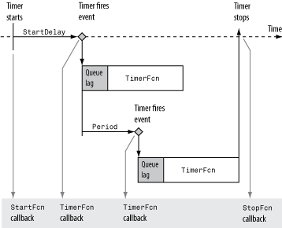

Timer Callback Functions
Note
Callback function execution might be delayed if the callback involves a CPU-intensive task such as updating a figure.
Associating Commands with Timer Object Events
The timer object supports properties that let you specify the MATLAB® commands that execute when a timer fires, and for other timer object events, such as starting, stopping, or when an error occurs. These are called callbacks. To associate MATLAB commands with a timer object event, set the value of the associated timer object callback property.
The following diagram shows when the events occur during execution of a timer
object and give the names of the timer object properties associated with each event.
For example, to associate MATLAB commands with a start event, assign a value to the
StartFcn callback property. Error callbacks can occur at any
time.
Timer Object Events and Related Callback Function

Creating Callback Functions
When the time period specified by a timer object elapses, the timer object executes one or more MATLAB functions of your choosing. You can specify the functions directly as the value of the callback property. You can also put the commands in a function file and specify the function as the value of the callback property.
Specifying Callback Functions Directly
This example creates a timer object that displays a greeting after 5 seconds.
The example specifies the value of the TimerFcn callback
property directly, putting the commands in a character vector.
t = timer('TimerFcn',@(x,y)disp('Hello World!'),'StartDelay',5);Note
When you specify the callback commands directly as the value of the callback function property, the commands are evaluated in the MATLAB workspace.
Putting Commands in a Callback Function
Instead of specifying MATLAB commands directly as the value of a callback property, you can put the commands in a MATLAB program file and specify the file as the value of the callback property.
When you create a callback function, the first two arguments must be a handle
to the timer object and an event structure. An event structure contains two
fields: Type and Data. The
Type field contains a character vector that identifies
the type of event that caused the callback. The value of this field can be any
of the following: 'StartFcn', 'StopFcn',
'TimerFcn', or 'ErrorFcn'. The
Data field contains the time the event occurred.
In addition to these two required input arguments, your callback function can accept application-specific arguments. To receive these input arguments, you must use a cell array when specifying the name of the function as the value of a callback property. For more information, see Specifying the Value of Callback Function Properties.
Example: Writing a Callback Function
This example implements a simple callback function that displays the type of event that triggered the callback and the time the callback occurred. To illustrate passing application-specific arguments, the example callback function accepts as an additional argument a character vector and includes this text in the display output. To see this function used with a callback property, see Specifying the Value of Callback Function Properties.
function my_callback_fcn(obj, event, text_arg) txt1 = ' event occurred at '; txt2 = text_arg; event_type = event.Type; event_time = datestr(event.Data.time); msg = [event_type txt1 event_time]; disp(msg) disp(txt2)
Specifying the Value of Callback Function Properties
You associate a callback function with a specific event by setting the value of the appropriate callback property. You can specify the callback function as a cell array or function handle. If your callback function accepts additional arguments, you must use a cell array.
The following table shows the syntax for several sample callback functions and describes how you call them.
Callback Function Syntax | How to Specify as a Property Value for Object
|
|---|---|
| t.StartFcn = @myfile |
| t.StartFcn = @(~,~)myfile |
| t.StartFcn = {@myfile, 5, 6} |
This example illustrates several ways you can specify the value of timer object
callback function properties, some with arguments and some without. To see the code
of the callback function, my_callback_fcn, see Example: Writing a Callback Function:
Create a timer object.
t = timer('StartDelay', 4, 'Period', 4, 'TasksToExecute', 2, ... 'ExecutionMode', 'fixedRate');Specify the value of the
StartFcncallback. Note that the example specifies the value in a cell array because the callback function needs to access arguments passed to it:t.StartFcn = {@my_callback_fcn, 'My start message'};Specify the value of the
StopFcncallback. Again, the value is specified in a cell array because the callback function needs to access the arguments passed to it:t.StopFcn = { @my_callback_fcn, 'My stop message'};Specify the value of the
TimerFcncallback. The example specifies the MATLAB commands in a character vector:t.TimerFcn = @(x,y)disp('Hello World!');Start the timer object:
start(t)
The example outputs the following.
StartFcn event occurred at 10-Mar-2004 17:16:59 My start message Hello World! Hello World! StopFcn event occurred at 10-Mar-2004 17:16:59 My stop message
Delete the timer object after you are finished with it.
delete(t)